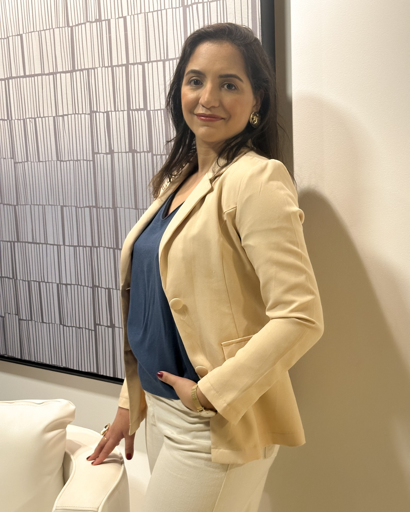
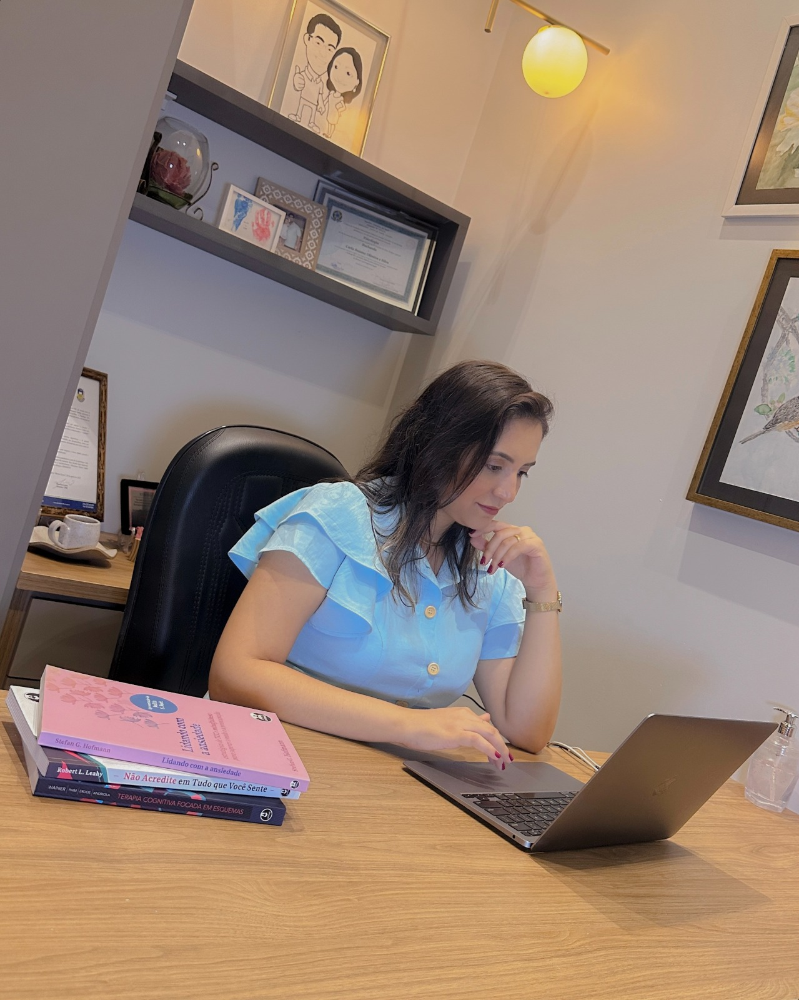
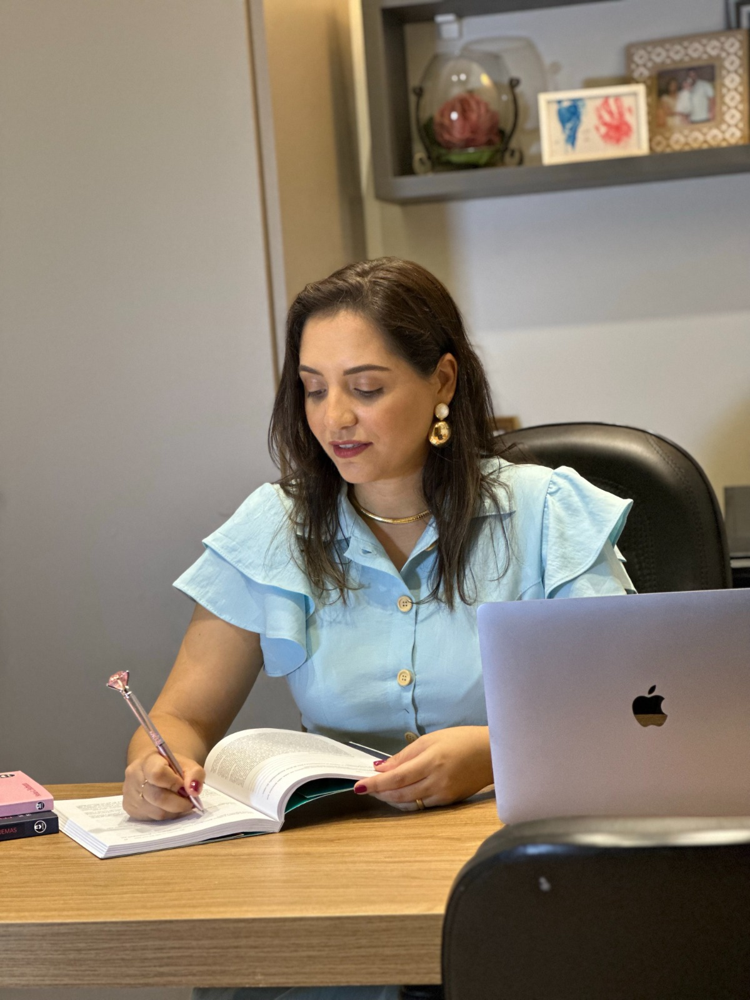
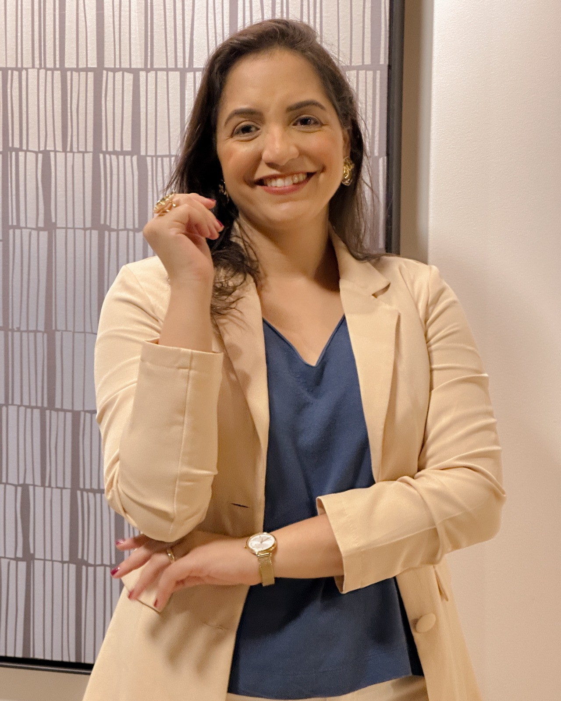
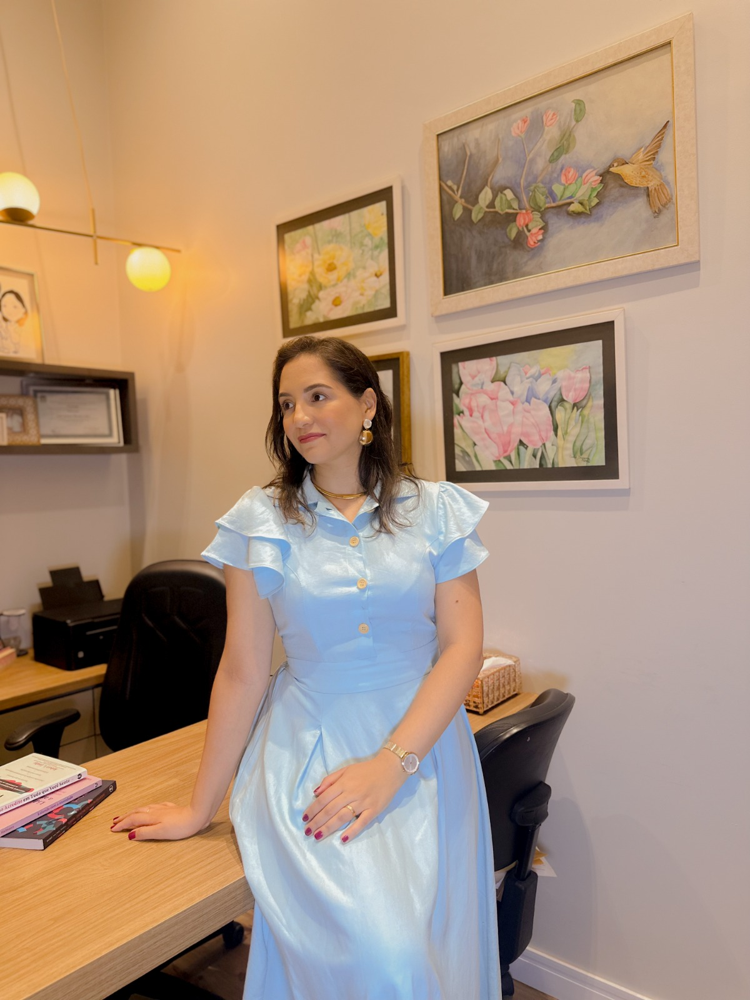

Pagamento via Pix
Para pacientes no Brasil, o pagamento pode ser feito por Pix. A chave e os dados necessários são informados pelo WhatsApp no momento do agendamento.
- Confirmação do horário
- Envio da chave Pix
- Comprovante na conversa
Atendimento psicológico
Sessões online, acolhedoras e sigilosas, em português e inglês.
Quem posso ajudar
Clique em um tema para ler uma orientação inicial e conhecer caminhos de cuidado.
TDAH não é falta de esforço. É viver com uma mente que muitas vezes funciona em um ritmo diferente.
Saiba mais AnsiedadeNem toda ansiedade é visível. Às vezes ela aparece como preocupação constante ou uma mente que não desliga.
Saiba mais DepressãoA depressão vai muito além da tristeza. Pode surgir como cansaço constante, culpa ou dificuldade para sentir prazer.
Saiba mais BurnoutVocê sente que está sempre dando conta de tudo... até não conseguir mais?
Saiba mais RelaçõesRelacionamentos saudáveis também se constroem. Conflitos, limites e culpa podem gerar sofrimento.
Saiba mais AdolescentesA adolescência é uma fase de muitas mudanças e desafios. Um espaço de escuta ajuda a atravessá-la.
Saiba mais ExteriorMorar fora transforma a vida - e desperta desafios emocionais que nem sempre são visíveis.
Saiba maisPsicóloga clínica, neuropsicóloga e terapeuta cognitivo-comportamental.
Sou psicóloga clínica formada pela UFGD, neuropsicóloga pela IBNeuro e terapeuta cognitivo-comportamental pela PUC-PR. Há mais de 12 anos acompanho adolescentes, adultos e famílias em sua jornada de cuidado com a saúde mental.
Minha trajetória também inclui formação em Desenvolvimento Humano e Aprendizagem pela Unesp - Bauru e muitos anos de atuação com crianças, adolescentes, famílias e contexto escolar. Essa vivência ampliou minha compreensão sobre desenvolvimento humano, relações familiares, comportamento, aprendizagem e saúde emocional ao longo das diferentes fases da vida.
Ao longo dos anos, acompanhei pessoas em diferentes momentos de suas histórias, tanto no Brasil quanto no exterior, atendendo brasileiros e estrangeiros em diferentes contextos culturais. Essa experiência ampliou meu olhar para desafios relacionados à adaptação, pertencimento, identidade e construção de novos caminhos.
Além da psicologia, sou esposa, mãe, cristã e alguém que acredita profundamente no potencial de crescimento, amadurecimento e transformação das pessoas.
Abordagem
Acredito que a terapia vai além do alívio dos sintomas. Ela pode ajudar cada pessoa a viver com mais clareza, equilíbrio e propósito.
Atendimento online e presencial em Dourados/MS para avaliação de TDAH.
Respostas rápidas
Sim. O atendimento é online, por videochamada, para adolescentes e adultos em qualquer cidade do Brasil ou do exterior.
Sim. As sessões podem ser em português ou inglês, conforme a língua em que você se sente mais à vontade.
Sim. Atendo brasileiros que vivem em outros países, com terapia online em português e atenção aos desafios de morar fora.
Sim. A terapia é online; a avaliação de TDAH é feita presencialmente em Dourados/MS. Os detalhes são combinados pelo WhatsApp.





Por que confiar no cuidado
Sem depoimentos de pacientes, por respeito ao sigilo. Aqui você encontra as informações que ajudam a decidir com segurança.
Graduação em Psicologia pela UFGD, neuropsicologia pela IBNeuro e terapia cognitivo-comportamental pela PUC-PR.
Escuta acolhedora e baseada em evidências, focada em pensamentos, emoções e padrões do dia a dia.
Acompanhamento de adolescentes, adultos e famílias, no Brasil e no exterior.
Sessões na língua em que você se sente mais à vontade para se expressar.
Terapia online para todo o Brasil e exterior; avaliação de TDAH presencial em Dourados/MS.
Não substitui urgência ou emergência. Na primeira conversa, acolhemos sua demanda e combinamos os próximos passos com calma.
Primeira sessão
Você fala sobre o momento atual, suas dúvidas e o que motivou a busca por terapia.
Observamos padrões de pensamentos, emoções, rotina e relações que aparecem no sofrimento.
Combinamos próximos passos possíveis, sempre respeitando seu ritmo e sua história.
Pagamentos
Após a confirmação do horário, os dados de pagamento são enviados em conversa privada, com orientação clara sobre prazo, comprovante e moeda.
Para pacientes no Brasil, o pagamento pode ser feito por Pix. A chave e os dados necessários são informados pelo WhatsApp no momento do agendamento.
Para brasileiros no exterior, o pagamento pode ser combinado com instruções internacionais conforme país, moeda e plataforma disponível.
Como é bom estar em paz consigo mesmo. Como é bom fazer psicoterapia.
Consultório
Um espaço reservado para escuta, elaboração e cuidado, com atendimento online e acolhimento profundo.
Dourados e região
Baseada em Dourados/MS, atendo online pessoas de todo o Brasil e brasileiros no exterior. Para quem está na região, a avaliação de TDAH também acontece presencialmente na cidade.
Blog
Conteúdos introdutórios sobre terapia, TCC, ansiedade, TDAH, depressão e atendimento online para adultos.
Um texto para entender terapia como cuidado contínuo, não apenas como último recurso.
Conheça a relação entre pensamentos, emoções e comportamentos no processo terapêutico.
Sinais de alerta para observar quando a preocupação vira peso na rotina.
Organização, autocobrança e atenção vistos com acolhimento e estratégia.
Uma conversa sobre sofrimento emocional, energia baixa e busca por apoio.
Como a escuta em português pode apoiar fases de adaptação e distância.
Antes de agendar
As sessões são realizadas por videochamada, com o mesmo cuidado, acolhimento e sigilo do atendimento presencial. Basta um ambiente reservado e uma boa conexão com a internet (e um fone, se preferir).
Basta entrar em contato pelo WhatsApp. Terei prazer em conversar com você, esclarecer suas dúvidas e verificar a disponibilidade de horários.
Sim. O atendimento é adaptado à fase do desenvolvimento e realizado em parceria com a família sempre que necessário, preservando o sigilo e o vínculo terapêutico do adolescente.
Sim. Atendo brasileiros que vivem em diferentes países, oferecendo terapia online em português, respeitando os desafios emocionais e culturais que fazem parte dessa experiência.
Sim. Também realizo atendimentos em inglês, quando essa for a melhor forma de comunicação para o paciente.
Sou psicóloga e cristã.
Para algumas pessoas, a fé ocupa um lugar importante em sua história, em seus valores e na forma como compreendem suas experiências. Por fazer parte desse contexto, compreendo também aspectos da vivência cristã que podem aparecer naturalmente durante o processo terapêutico.
Minha atuação profissional, entretanto, é fundamentada na Psicologia e conduzida de acordo com seus princípios técnicos e éticos. A psicoterapia não tem como objetivo direcionar crenças ou convicções religiosas.
A fé, quando importante para o paciente, pode ser acolhida como parte de sua história e de seus valores, sempre com respeito à sua autonomia.
Atendo pessoas cristãs, de outras crenças e também agnósticas, sempre com respeito e atenção às particularidades de cada pessoa.
As sessões têm duração média de 50 minutos e, geralmente, acontecem uma vez por semana. A frequência é definida de acordo com a necessidade de cada caso.
Atualmente, os atendimentos são particulares. Caso seu convênio ofereça reembolso para consultas psicológicas, posso fornecer a documentação necessária para solicitação junto ao plano.
Não. A terapia é online e atende pessoas de qualquer cidade do Brasil e do exterior. Estar em Dourados/MS só é necessário para a avaliação de TDAH, que é presencial.
As sessões acontecem por videochamada, em português, com o horário combinado conforme o seu fuso. O cuidado considera os desafios de adaptação, pertencimento e distância de morar fora.
A terapia online é um processo contínuo de acompanhamento por videochamada. A avaliação de TDAH é um processo específico, com etapas e instrumentos próprios, realizada presencialmente em Dourados/MS.
Sim. As sessões podem ser realizadas em inglês quando essa for a melhor forma de comunicação, e o idioma pode ser combinado ou alternado ao longo do processo.
Como começar
Sem formulário e sem burocracia. O contato inicial é direto pelo WhatsApp, no seu tempo.
Envie uma mensagem contando, em poucas linhas, o que motivou a busca por terapia.
Conversamos sobre horários, fuso quando necessário e se será terapia online ou avaliação presencial.
Agendamos a primeira sessão ou avaliação conforme o seu caso, com combinados claros.
Contato
Me chame aqui no WhatsApp, respondo em breve. Ou, se preferir, envie um e-mail.
Conversar no WhatsApp